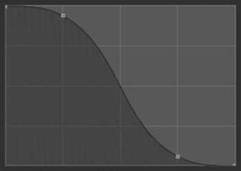
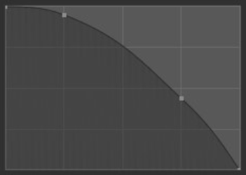
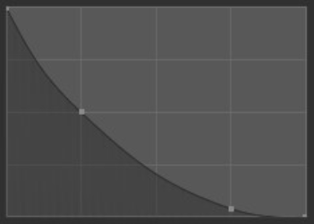
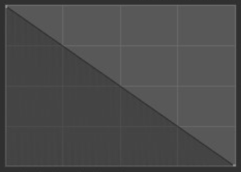
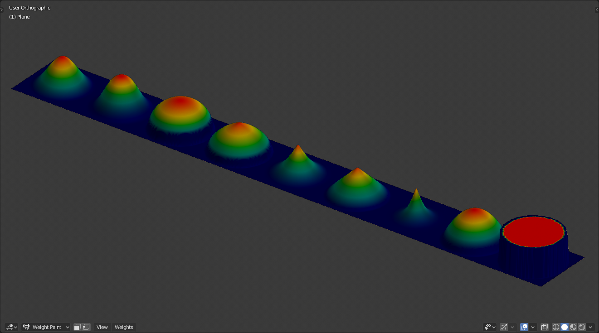

衰减¶
衰减控制笔刷衰减的 强度 。衰减从画笔的中心（曲线的左侧部分）映射到其边界（曲线的右侧部分）。更改曲线的形状将使画笔更软或更硬。更多信息请查看 曲线部件 。

笔刷曲线示例。¶
- 曲线预设
- 自定义
The user can choose how the strength of the falloff is determined from the center of the brush to the borders by manually manipulating the control points within the Curve Widget. There are also a handful of preset custom curves displayed at the bottom of the curve widget that can be used on their own or tweaked to get the perfect look.
自定义预设类型。¶ 光滑。平滑¶

Smooth. Smooth.¶
根。¶
锋利。¶
线性。¶

常量。¶
- 平滑化
中心强度、边界强度和它们之间的衰减过渡均匀分布。
- 平滑器
类似于 光滑 ，但在逐渐变细之前产生更宽的刷子中心点。
- 球形
刷子的强度主要在其最强点，在刷子边缘附近具有陡峭的衰减。
- 根凸
类似于球体，但中心是一个更集中的点。
- 锐利
刷子的中心是最强的点，然后呈指数级逐渐减小到较低的强度，从而产生一个细点。
- 线性
由于中心是最强的，因此当它到达刷子的边界时，强度会不断减弱。
- 较锐利
与 夏普 类似，但中心点更浓缩。
- 反向平方
平滑 和 球体 之间的混合体。
- 常量
刷子的强度在整个刷子上保持统一。这将在画笔的边框处创建一个锐利的边缘。
（从左到右）平滑，更平滑，球体，根，尖锐，线性，更尖锐，平方反比，常数。¶
- 衰减形状
Use projected or spherical falloff. Note, this is not supported in Texture Paint mode.
- 球形
从中心向外在球体中应用笔刷影响。
- 投射
这将笔刷影响转换为一个圆柱体（将忽略沿视图的深度），而非球体。它可用于沿网格的轮廓来调整其轮廓。